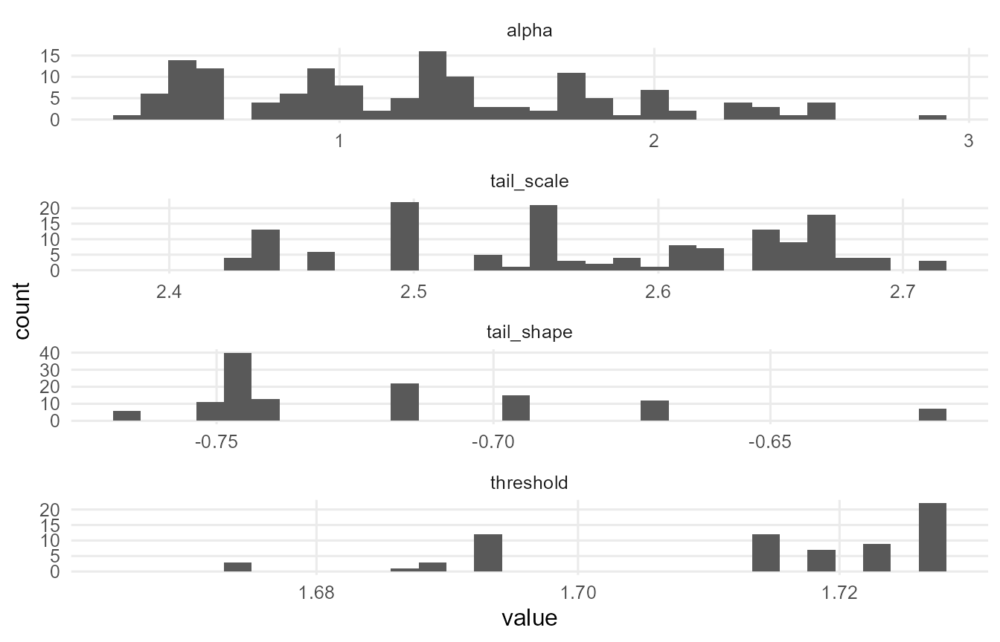
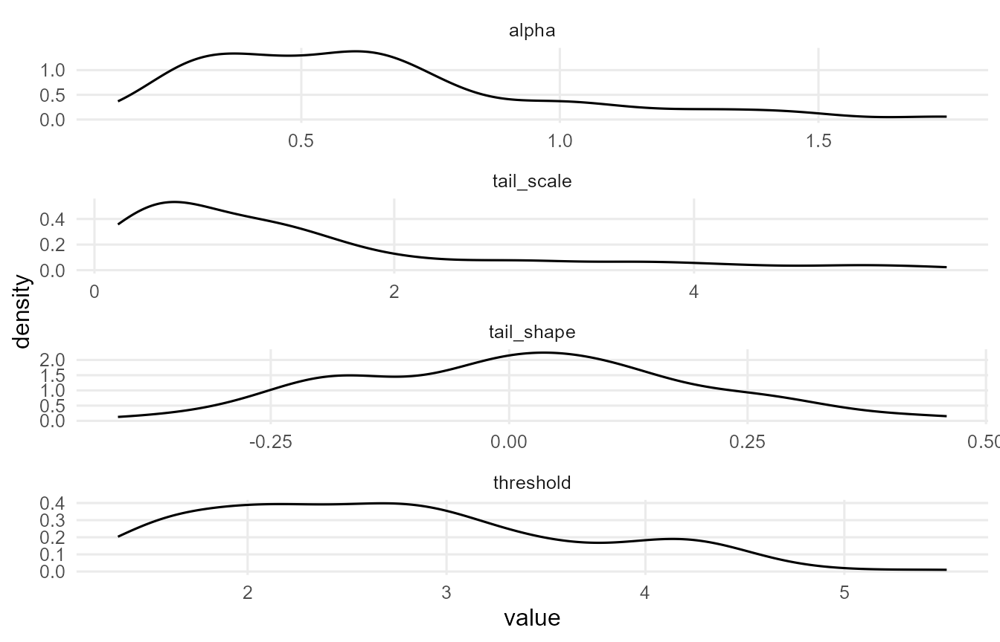
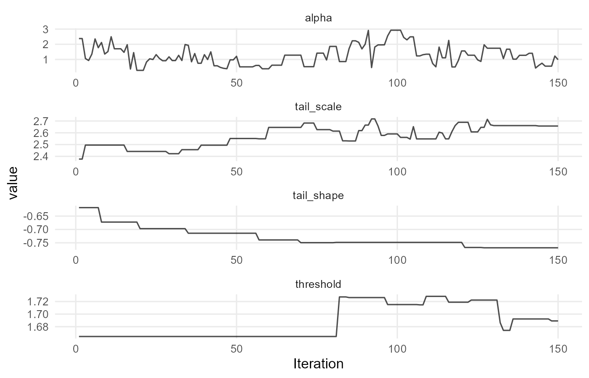
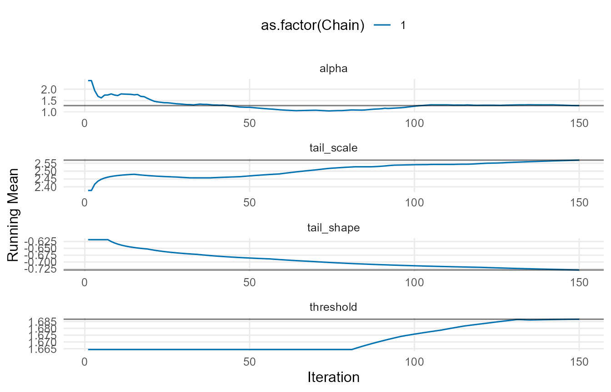
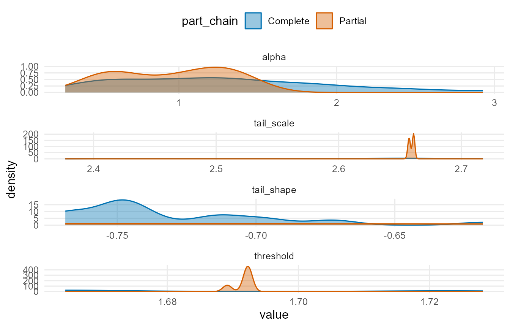
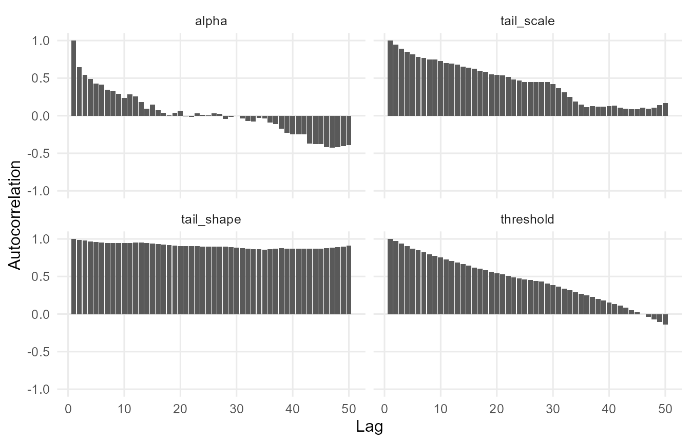
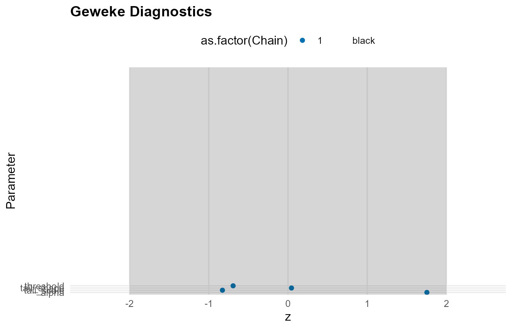
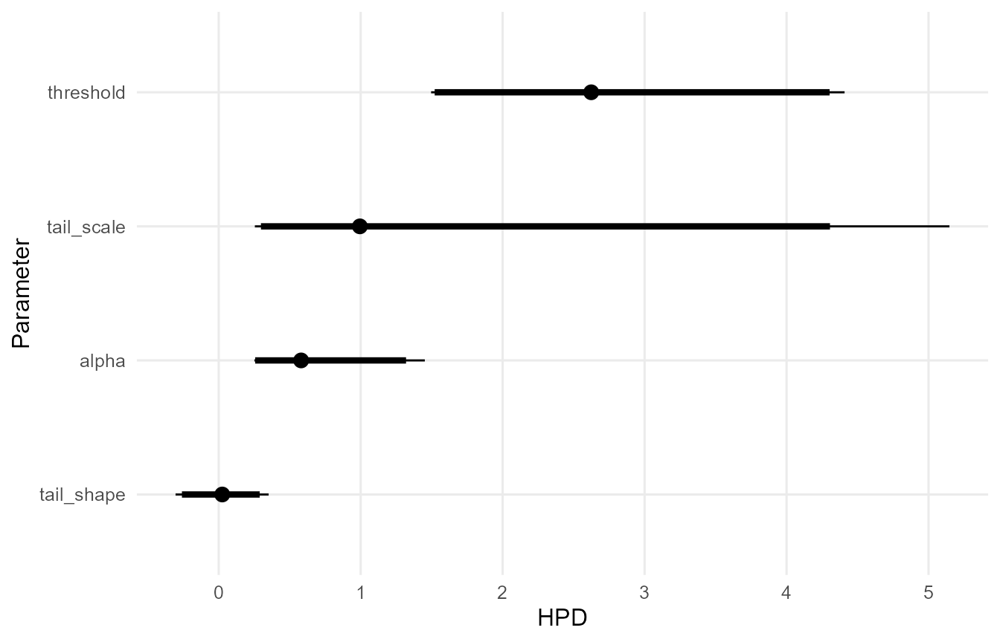
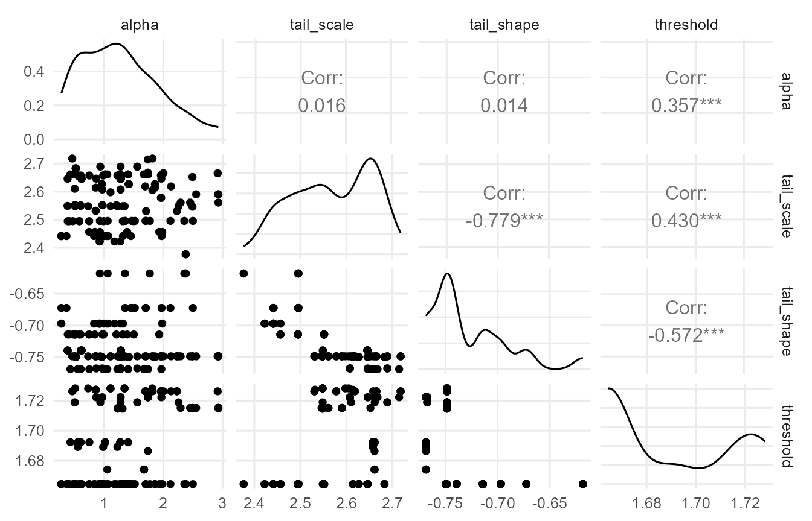

Overview
This vignette provides an end-to-end introduction to the DPmixGPD workflow:
- Build a model specification
- Run MCMC sampling
- Extract fitted values and predictions
Theory (brief)
DPmixGPD models the bulk of a distribution with a Dirichlet process (DP) mixture, then optionally splices a Generalized Pareto Distribution (GPD) tail beyond a threshold . For outcomes and kernel , the bulk model is $$ f(y_i) = \\int K(y_i; \\theta)\\, dG(\\theta), \\quad G \\sim \\mathrm{DP}(\\alpha, G_0). $$ When a tail is included, the density is replaced for by a GPD tail with scale and shape parameters, preserving continuity at .
Model Description
DPmixGPD fits flexible mixture models for the bulk of the distribution and can splice a Generalized Pareto Distribution (GPD) tail beyond a threshold. This approach is appropriate when:
- The center of the data is not well described by a single parametric family
- The extreme right tail requires principled extrapolation
Minimal Example
library(DPmixGPD)
data("faithful", package = "datasets")
y <- faithful$eruptions
bundle <- build_nimble_bundle(
y = y,
backend = "sb",
kernel = "normal",
GPD = TRUE,
components = 6,
mcmc = mcmc
)
fit <- run_mcmc_bundle_manual(bundle, show_progress = FALSE)Fitted Values and Residuals
f <- fitted(fit, type = "mean", level = 0.90)
head(f)
#> fit lower upper residuals
#> 1 3.2 3.06 3.36 0.400
#> 2 3.2 3.06 3.36 -1.400
#> 3 3.2 3.06 3.36 0.133
#> 4 3.2 3.06 3.36 -0.917
#> 5 3.2 3.06 3.36 1.333
#> 6 3.2 3.06 3.36 -0.317
summary(f$residuals)
#> Min. 1st Qu. Median Mean 3rd Qu. Max.
#> -1.600 -1.038 0.800 0.287 1.254 1.900Predictions
pred_mean <- predict(fit, type = "mean", cred.level = 0.90, interval = "credible")
pred_q90 <- predict(fit, type = "quantile", index = 0.90, cred.level = 0.90, interval = "credible")
pred_mean$fit
#> estimate lower upper
#> 1 3.19 3.05 3.32
pred_q90$fit
#> estimate index lower upper
#> 1 4.55 0.9 4.45 4.67Diagnostic Plots
if (requireNamespace("ggmcmc", quietly = TRUE) && requireNamespace("coda", quietly = TRUE)) {
plot(fit)
} else {
message("Plotting requires 'ggmcmc' and 'coda' packages.")
}
#>
#> === histogram ===
#>
#> === density ===
#>
#> === traceplot ===
#>
#> === running ===
#>
#> === compare_partial ===
#>
#> === autocorrelation ===
#>
#> === geweke ===
#>
#> === caterpillar ===
#>
#> === pairs ===